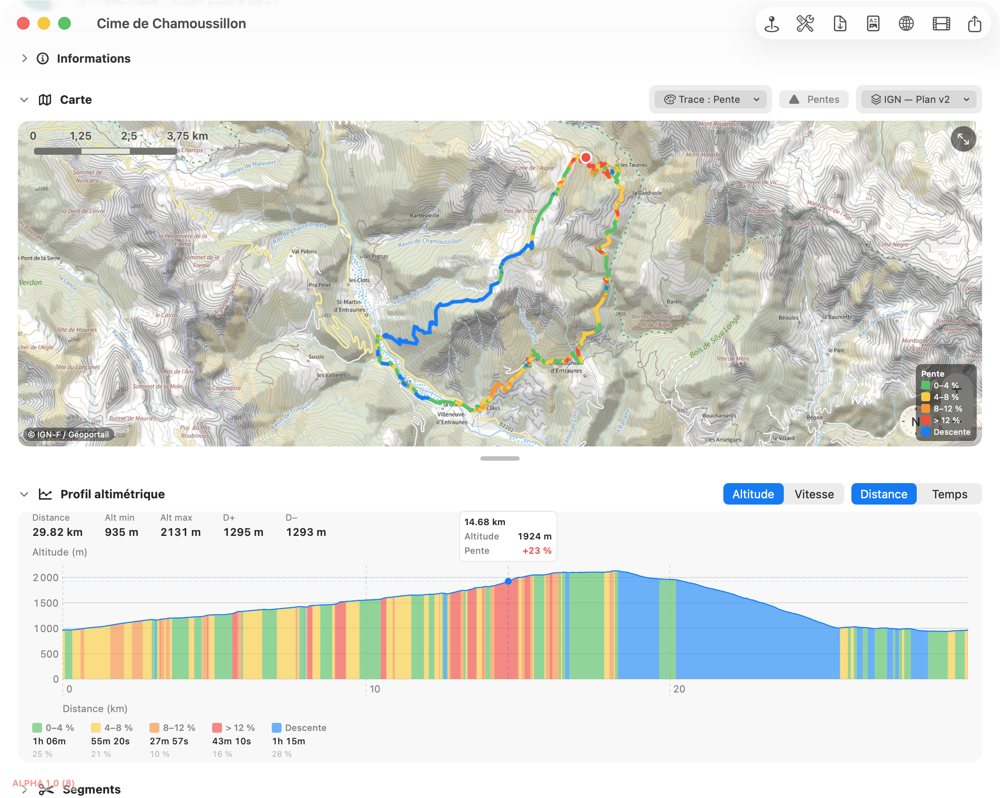

Lisez le relief de votre sortie : altitude ou vitesse, par distance ou par temps, avec la pente colorée et — si elle a été enregistrée — la fréquence cardiaque.
Lire le profil
En haut du profil, deux sélecteurs : la métrique (Altitude ou Vitesse) et l'axe horizontal (Distance ou Temps). L'encart rappelle Distance, Alt min, Alt max, D+ et D− (ou les vitesses moyenne/max en mode Vitesse).

📷 Capture à ajouter :aide/profil/img/etape-1.pngEn mode Altitude / Distance, le profil est coloré selon la raideur de la montée :
En mode Temps, si la sortie contient des données cardiaques, une courbe rouge de FC se superpose, avec son axe en bpm à droite et une légende « Fréq. cardiaque » + la plage min–max. Au survol, l'infobulle affiche la FC du point.
Carte et profil, liés
Passez la souris sur le profil : un trait vertical suit le point, et une épingle apparaît au bon endroit sur la carte. Vous repérez ainsi instantanément où se situe une montée raide ou un pic de FC.
Faites glisser horizontalement sur le profil pour sélectionner une portion : la zone se surligne et un segment est créé (avec ses propres stats). Voir Segments.